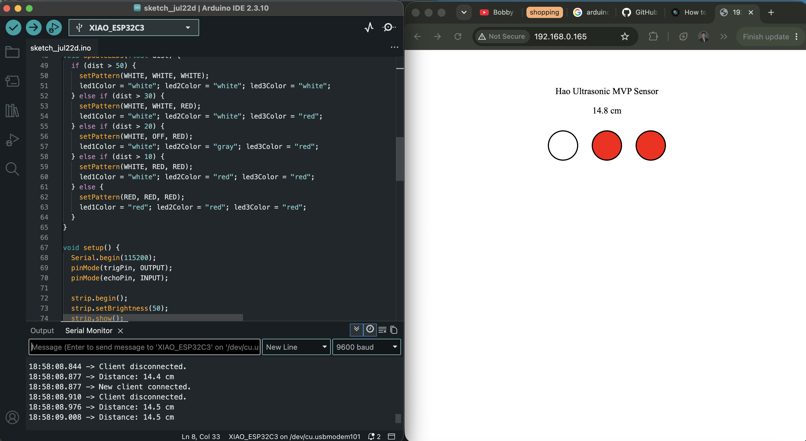

For week 9, we further explored Ardunio network. We used our Xiao ESP32 to connect to the local LAN or Remote Servers and communiticate with the other. Another way to upload and communicate the Xiao is through websockets through local IP address. Learning how to integrate these Xiao features helped me think of ways to add them to my MVP.

This websocket is apart of my MVP progress. I connected the Xiao ESP32 to the network and created a simple interface that updates the light patterns live.